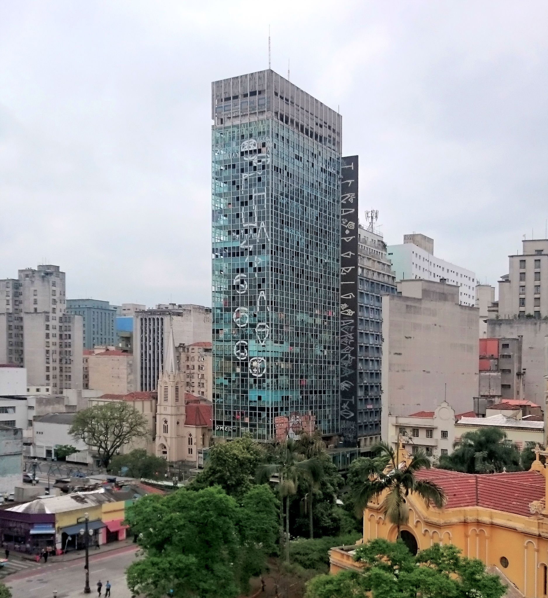
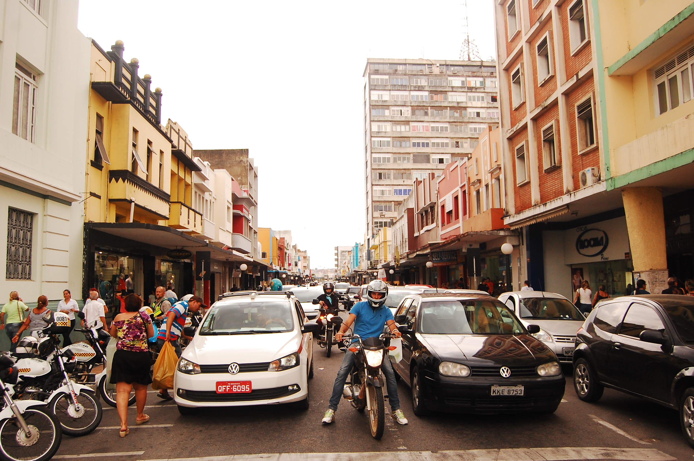
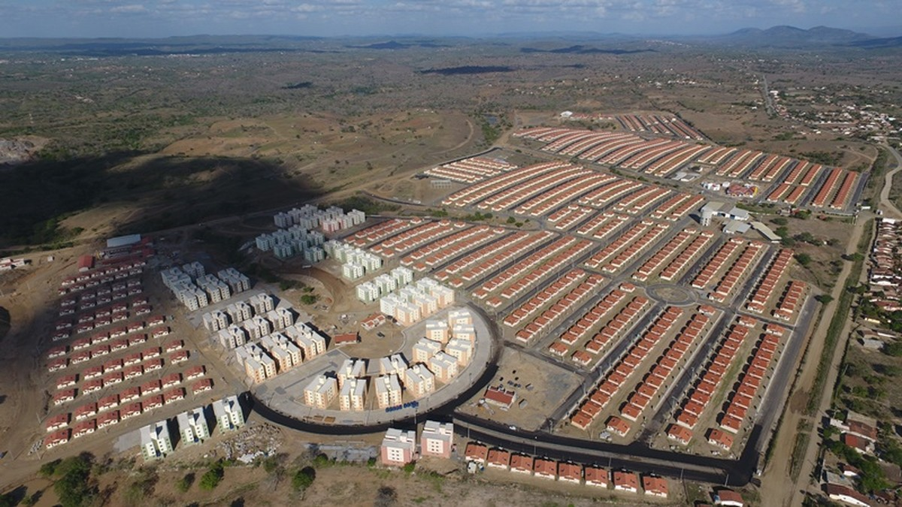

©2017 LabRua
Template: Bootstrapious
+ Kishan B

E esse vazio?
2018-15-11; vazios-urbanos, centro-urbano, simulação
Os centros urbanos das cidades brasileiras sofreram muitas mudanças nas dinâmicas ao longo do tempo. Espaços (do urbano ao arquitetônico) com grande relevância no contexto cultural, econômico e social das cidades vêm passando por processos de abandono e expulsão.
por Allyson Barbosa, Claudia Palmeira, Persio Padre e Thaís Paixão
Em Campina Grande o cenário não é diferente, o núcleo central é conhecido pelas diversas intervenções ao longo do tempo, como é o caso da higienização promovida pelo governo de Vergniaud Wanderley em meados da década de 1930, que na busca pelo embelezamento da área, expulsou pessoas e moradias das edificações do núcleo central.
Recorte da área de estudo: Núcleo Central de Campina Grande. Fonte: Google Earth adaptado (2018)

Nos tempos atuais, essa problemática ainda existe mas ocorre por meio de novos processos, como os interesses imobiliários e programas sociais equivocados obrigando as pessoas a irem para as áreas periféricas, ocasionando o espraiamento da cidade sem atingir a densidade demográfica ideal das áreas centrais existentes.
A exemplo da cidade de São Paulo, onde temos o caso do edifício Wilton Paes de Almeida que desabou no início de 2018, que na época era ocupado por aproximadamente 100 famílias pertencentes ao Movimento Social de Luta por Moradia - MSLM, expôs a falta de políticas públicas em relação ao déficit habitacional existente nos grandes núcleos centrais. A União tomou posse do prédio em razão de dívidas, desde então, o edifício vazio não teve iniciativas para programas de moradia.
Edifício Wilton Paes. Foto Hugo Segawa
https://www.nucleodocomomosp.com.br/noticias/a-perda-de-um-%C3%ADcone-da-arquitetura-moderna-paulista-o-edif%C3%ADcio-wilton-paes-de-almeida Mesmo com uma concentração expressiva de áreas de permanência, as edificações presentes no núcleo central da cidade, possuem pouca miscigenação de usos, gerando movimento concentrado em horários específicos e ocasionando uma desertificação no horário noturno, aumentando a insegurança e o abandono dos espaços públicos. Essa pouca miscigenação de usos nos imóveis da área (mais perceptíveis nos níveis superiores aos térreos comerciais) ainda nos leva a refletir sobre o modelo de cidades que produzimos, onde é comum expandir a malha urbana para zonas periféricas, mesmo havendo áreas centrais ociosas e com infraestrutura adequada para adensamento.
Segundo o Ministério das Cidades (2015), o déficit habitacional campinense é de 11 mil moradias. O levantamento realizado pelo LabRua identificou 159 imóveis potenciais para uso habitacional localizada no núcleo central, ou seja, que só possuem uso parcial, sendo grande parte comércio no térreo e os pavimentos superiores são destinados, em sua maioria, a depósitos, totalizando 219 pavimentos - cerca de 50% do total da área construída.
Rua Maciel Pinheiro, centro de Campina Grande
Além dos inúmeros depósitos existentes, há também pavimentos e edifícios vazios, como o antigo Fórum Afonso Campos, localizado no centro de Campina Grande, do arquiteto pernambucano Tertuliano Dionísio da Silva. O edifício se encontra desativado e abandonado desde 2012, quando o complexo jurídico (uso anterior) passou a funcionar no bairro da Liberdade. O prédio no centro teria sido concedido para UEPB por um período de 30 anos, tornando-a responsável pelo zelo e pelo uso do edifício, mas este convênio foi rescindido recentemente e cedido para o município em Junho de 2018, visando dar o uso de Secretaria de Serviços Urbanos de Campina Grande.
Com mais de 2400m² de área construída, o antigo Fórum Afonso Campos é um dos 18.091 imóveis, galpões e terrenos em desuso no Brasil. Destes, 10.304 são de propriedade do governo (dado não acurado, pois os municípios não tem o controle da quantidade exata de terrenos ou imóveis da união).
O conjunto habitacional Aluízio Campos, implementado pelo programa Minha Casa, Minha Vida do Governo Federal, é um exemplo de inserção de moradias para a população de baixa renda em áreas fora do limite urbano da cidade de Campina Grande. Foram construídas mais de 4000 habitações em um local afastado do centro da cidade, sem infraestrutura urbana, longe do local de trabalho e de lazer dos moradores.
Conjunto habitacional Aluízio Campos
Foto: Reprodução / Prefeitura Municipal de Campina Grande. https://g1.globo.com/pb/paraiba/noticia/2018/07/25/prefeitura-convoca-26-mil-sorteados-no-aluizio-campos-para-reunioes-em-campina-grande.ghtml Se ‘há tanta gente sem casa e tanta casa sem gente, por que não repensar a maneira que estamos construindo nossas cidades? Como pensar novas formas de habitar e construir cidades pensadas pelo povo e para o povo?